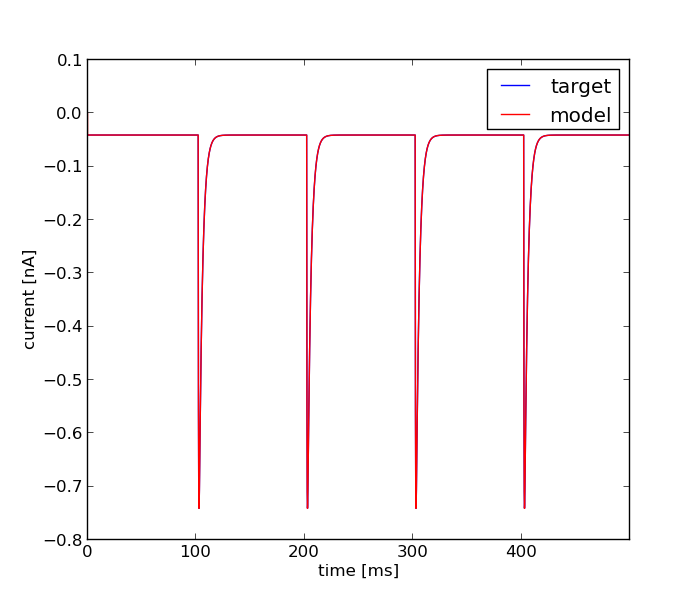

Tue Mar 4 12:38:34 2014
Optimization of simple_hh_syn_vclamp_toopt2.hoc based on: /home/fripe/workspace/git/optimizer/tests/VClamp_surrogate/iclamp_new.dat
Results
| Parameter Name | Minimum | Maximum | Optimum |
|---|---|---|---|
| weight | 0.0001 | 1.0 | 0.0100020206771 |
| delay | 0.0 | 5.0 | 1.97830968194 |
| tau_rise | 0.001 | 1.0 | 0.300647452275 |
| tau_decay | 0.1 | 5.0 | 2.99599554896 |
Fitnes: 1.72865346223e-07

Error Tolerance for x: = None
Size of Population: = 100
Accuracy: = None
Mutation Rate: = 0.25
Cooling Rate: = None
Final Temperature: = None
Std. Deviation of Gaussian: = None
Cooling Schedule: = None
boundaries = [[0.0001, 0.0, 0.001, 0.1], [1.0, 5.0, 1.0, 5.0]]
Number of Generations: = 100.0
evo_strat = Classical EO
seed = 1234.0
Initial Temperature: = None
starting_points = None
Dwell: = None
Mean of Gaussian: = None
Error Tolerance for f: = None
num_inputs = 4
feats = Average Squared Error
weights = [1]
user function =
def usr_fun(self,v):
#4
#weight
#delay
#tau_rise
#tau_decay
h.nc.weight[0] = v[0]
h.nc.delay = v[1]
h.ampasyn.tau1 = v[2]